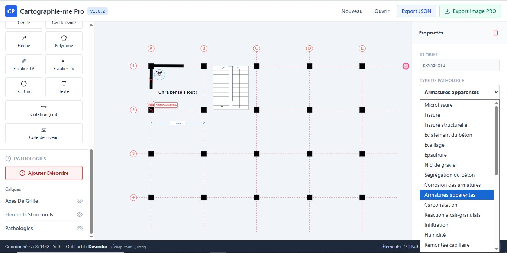
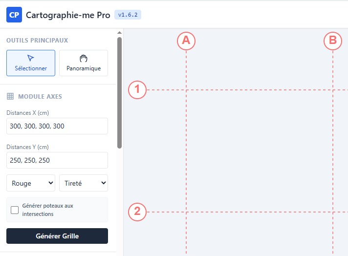
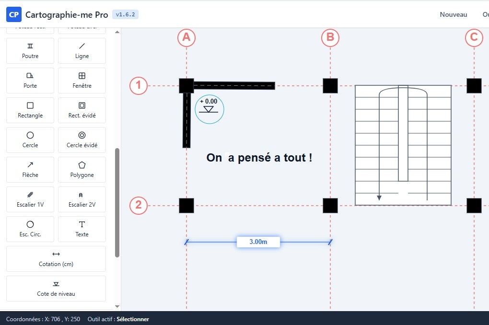
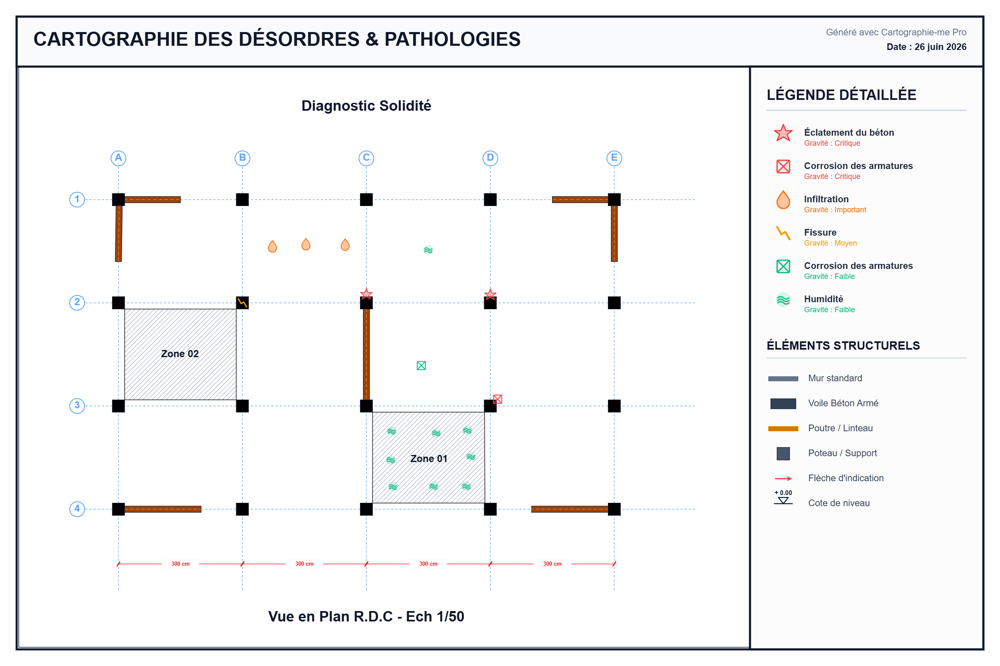
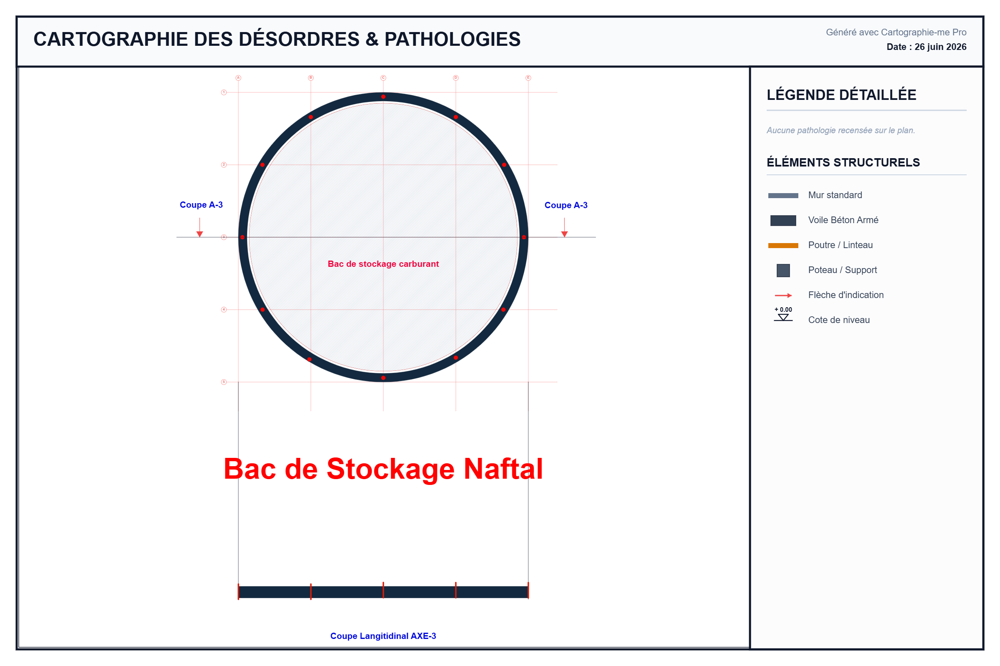
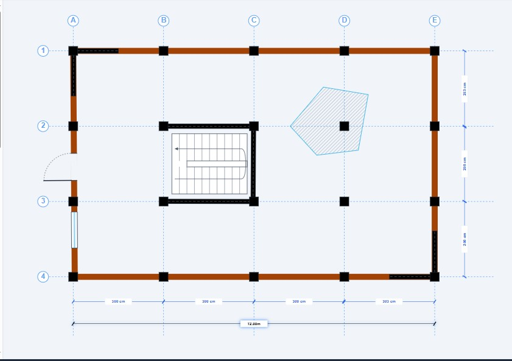
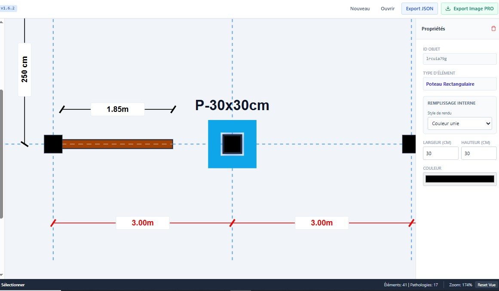
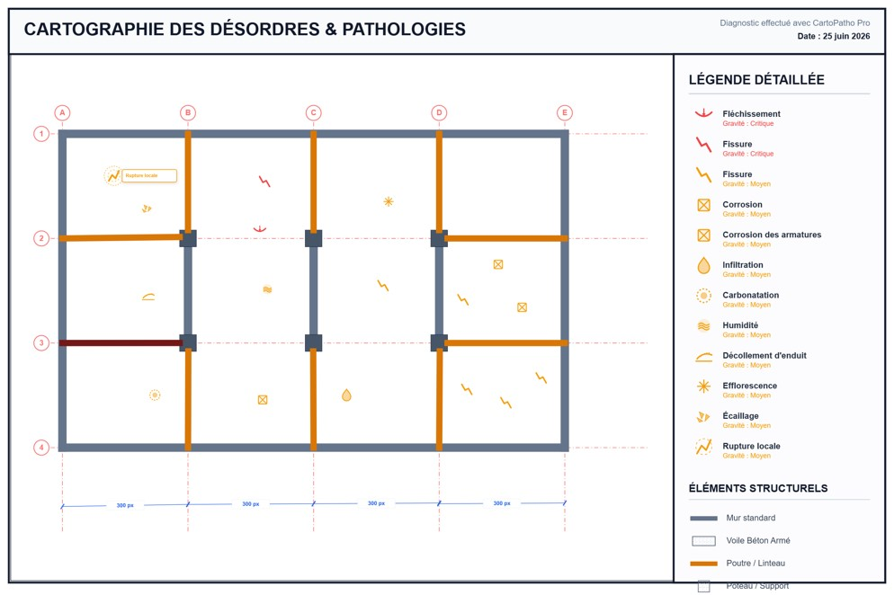

Une application sur-mesure offrant à l'ingénieur une liberté totale. Modélisez vos vues en plans, intégrez vos pathologies, et générez des rapports d'une clarté absolue.

Interface
Liberté Artistique
Une suite logique pensée par un ingénieur, pour les ingénieurs. De la trame structurelle à la qualification du désordre, chaque étape est optimisée.

Fondez la base de votre ouvrage. Créez instantanément des grilles, des repères de fondations ou de poteaux/voiles avec un dimensionnement précis et paramétrable.

Une boîte à outils dédiée au génie civil. Insérez murs, poteaux, poutres, lignes de cotes et zones spécifiques. L'interface s'efface pour laisser place à votre expertise.

Placez vos désordres avec une sémantique visuelle forte. Utilisez une vaste base pré-configurée (fissures, humidité, etc.) ou créez vos propres pathologies sur-mesure.

L'outil dépasse la simple DAO. Il structure l'information pour rendre le diagnostic accessible et inattaquable. Le but ? Une transparence totale pour anticiper les coûts.
Le client consulte une carte claire, enrichie de commentaires explicatifs. Chaque désordre est justifié et localisé avec précision.
Une exhaustivité qui supprime la part d'ombre. L'estimation financière des travaux de réparation devient précise, éliminant les mauvaises surprises budgétaires.
Générez des rapports visuels d'une qualité irréprochable. Légendes dynamiques, échelles respectées, prêts pour vos dossiers d'expertise.

Génération de la cartographie complète incluant le tableau de légende détaillé et auto-généré.

Détail sur la netteté des cotes et l'identification visuelle claire (gravité, type d'infiltration).

Superposition parfaite du réseau structurel (poutres/linteaux) avec les désordres observés in-situ.
L'outil indispensable pour l'ingénieur civil moderne. Fiabilité, rapidité et transparence réunies.